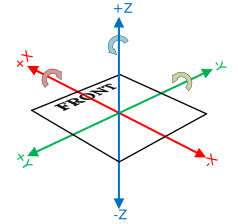

Common Conventions and Things To Remember
There are a few things that are very useful to remember - regardless of whether I actually agree with them - because either REV Robotics, WPILib, or First themselves use them.
REV Conventions
REV Robotics code will usually have 'm_' as a prefix for most variables (I'm unsure why it's 'm' and not another letter) and 'k_' as a prefix for constant variables. Feel free to change this for our own robot projects, as it's a strange way of writing code.
WPILib Conventions
All coordinate-related things in WPILib follow this convention:

X+ is always forwards, Y+ is always LEFT (not right, as you may expect) and Z+ is always up. More information on coordinates can be found here. For those who are used to working with software like Unity, these coordinates take some getting used to.